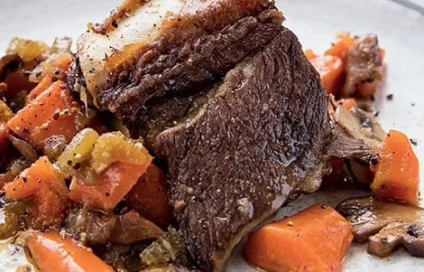

Beef Short Ribs
Filling, delicious, special occassion meal.

Ingredients
- 3 tablespoons extra-virgin olive oil
- 1 cup chopped carrots
- 1/2 cup thinly sliced celery
- 1/2 cup chopped onion
- 1 to 1.25lbs bone-in beef short ribs
- 1 cup Beef Bone Broth
- 3/4 teaspoon salt
- Black Pepper
- 1/4 cup dried porcini mushrooms
- Boiling Water
- 1 cup sliced cremini mushrooms
- 1 clove garlic, minced
- 2 tsp coconut aminos
- 1 tsp coarse-grain mustard
Instructions - Main Course
- Preheat Oven to 325.
- Salt the short ribs.
- Heat 1 Tbsp of Olive Oil in an oven-safe skillet over medium heat.
- Add the carrots, celery, and onion to the hot oil and cook, stirring occasionally, for 5 minutes. Use a slotted spoon to transfer the vegetables to a bowl.
- Add short ribs to the pan and brown each side evenly.
- Spoon vegetables back into the pan around the short ribs.
- Add 1/2 Cup of broth.
- Salt and pepper the vegetabls and short ribs.
- Bring broth to a boil, then cover and transfer to the oven for 2 to 2.5 hours.
Instructions - Mushrooms (Side)
- Place the dried mushrooms in a bowl and add boiling water until covered.
- Let stand for 10 minutes.
- Drain the mushrooms in a fine-mesh sieve set over a bowl to catch the soaking liquid; set the liquid aside.
- Rinse the mushrooms well and chop them.
- In a medium saucepan, heat the remaining 2 Tbsp of oil over medium heat.
- Add porcini and cremini mushrooms and cook, stirring occassionally, until tender and lightly browned. 6-8 minutes.
- Add garlic and cook, stirring, for about 1 minute or until fragrant.
- In a small bowl, whisk together coconut aminos and mustard. Add to the saucepan with the mushrooms.
- Stir in the remaining 1/2 Cup of broth and mushroom soaking water previously set aside. Bring to a boil.
- Reduce to medium-low and simmer, uncovered, until liquid has reduced slightly. About 3-5 minutes.
- Salt and pepper to taste.
Chef's Notes
Beef short ribs are expensive, but this meal is worth it. See original recipe here.